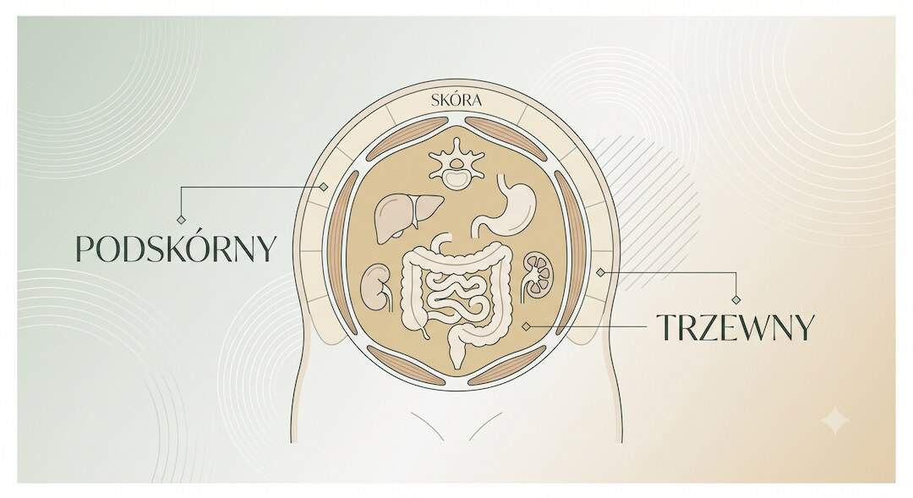
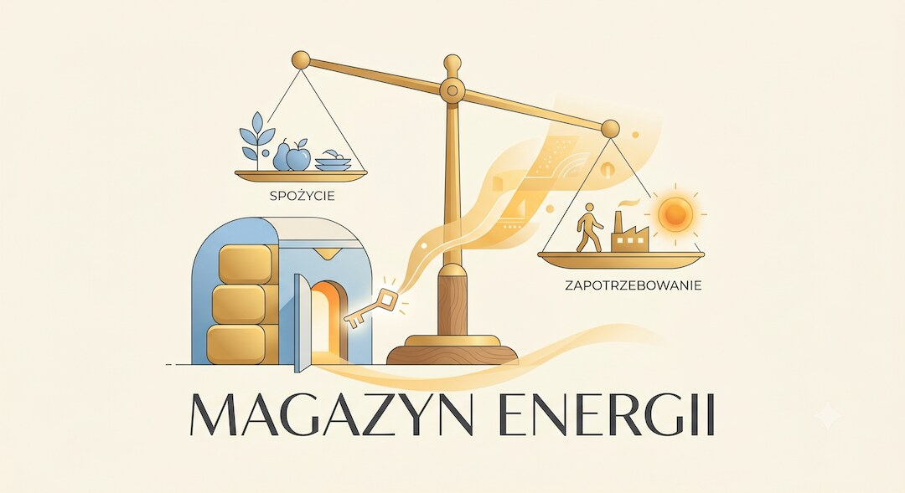
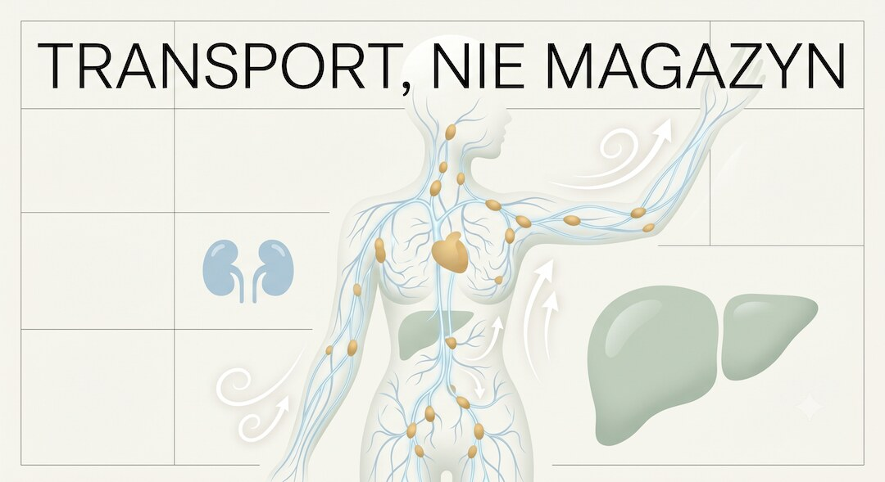
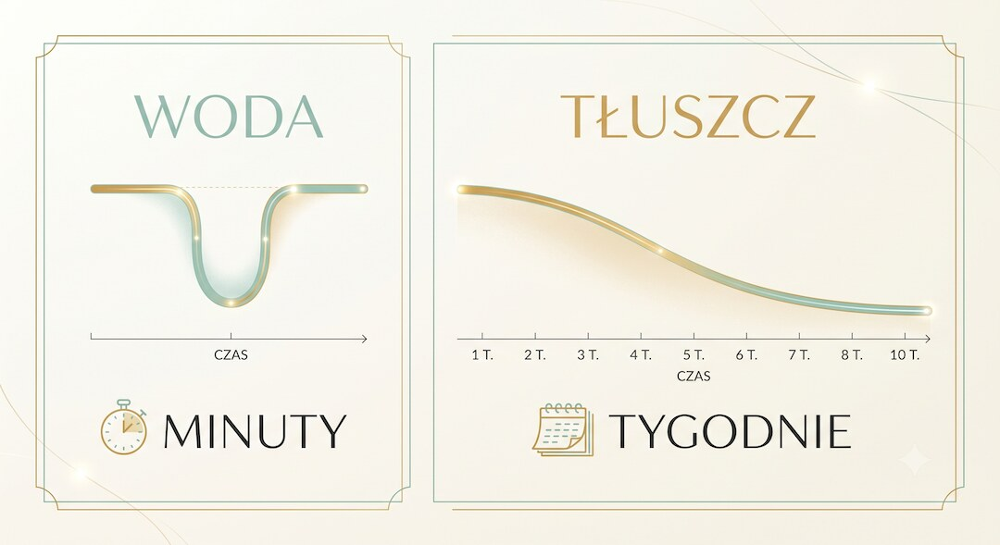

Krąży obietnica, że brzuch po 40-tce to nie tłuszcz, tylko woda zatrzymana przez „spowolniony układ limfatyczny”. A tajny „detoks limfatyczny” ma go usunąć w kilka minut — bez siłowni, diety i zastrzyków. Brzmi zbyt dobrze, żeby było prawdziwe. Rozłóżmy to spokojnie.
Szybka odpowiedź
To mit, bo brzuch po 40-tce najczęściej jest tłuszczem podskórnym i trzewnym, a nie wodą zatrzymaną przez limfę, więc „detoks” może najwyżej chwilowo zmienić uczucie napięcia lub obwód przez płyny i wzdęcia, ale nie spali tkanki tłuszczowej w kilka minut bez deficytu energii i czasu.
Kluczowe wnioski
- Brzuch po 40-tce to najczęściej tłuszcz podskórny i trzewny, nie woda zatrzymana przez układ limfatyczny.
- Układ limfatyczny transportuje płyn i wspiera odporność, ale nie magazynuje tłuszczu ani nie wymaga „detoksu”.
- Masaż lub drenaż mogą chwilowo zmienić obwód przez wodę i wzdęcia, ale nie spalają tkanki tłuszczowej.
- Brzuch realnie zmniejszają deficyt kalorii, białko, trening siłowy, ruch, sen i mniej alkoholu — w tygodniach, nie minutach.
Czym naprawdę jest brzuch po 40-tce?
Brzuch po 40-tce to w ogromnej większości tłuszcz, a nie „zatrzymana woda”. Są dwa jego rodzaje. Podskórny — ten miękki, który da się uszczypnąć. I trzewny — głębszy, schowany za mięśniami brzucha, otaczający narządy. U większości ludzi około 90% tłuszczu to ten podskórny, a około 10% to trzewny.
To rozróżnienie ma znaczenie, bo to tłuszcz trzewny jest aktywny metabolicznie i wiąże się z wyższym ryzykiem chorób serca, cukrzycy i nadciśnienia. Po pięćdziesiątce dochodzi jeszcze jedno: tracimy mięśnie, ciało spala mniej w spoczynku, a u mężczyzn nadwyżka energii lubi lądować akurat na brzuchu. To nie spisek limfy — to fizjologia i hormony.
Wniosek dla Ciebie jest prosty, choć mniej efektowny niż reklama: jeśli brzuch rośnie powoli od lat, to prawie na pewno tłuszcz. A tłuszczu nie da się „wypłukać”. Trzeba dać ciału powód, żeby go zużyło.

Dlaczego ta obietnica brzmi tak wiarygodnie?
Chodzi o obietnicę: „to nie tłuszcz, tylko woda zatrzymana przez limfę, więc detoks limfatyczny zdejmie brzuch w kilka minut”. Brzmi wiarygodnie, bo miesza prawdziwe pojęcia z fałszywym wnioskiem. Układ limfatyczny istnieje, drenaż limfatyczny istnieje, ale z tego nie wynika, że tłuszcz z brzucha da się wypłukać.
Sam bym się przy tym na chwilę zatrzymał, bo to trafia w realną frustrację: ćwiczysz, pilnujesz się, a brzuch zostaje. Hasło „bez siłowni, bez diety, bez zastrzyków, w kilka minut” obiecuje efekt bez czasu i wysiłku. Nie jesteś naiwny, że to przyciąga uwagę — to jest napisane dokładnie po to, żeby przyciągało.
Haczyk jest prosty: jeśli ktoś obiecuje utratę brzucha bez deficytu energii, bez treningu i w kilka minut, powinien pokazać badanie, które dokładnie to sprawdziło. Sama liczba typu „85% mężczyzn” niczego nie dowodzi, jeśli nie wiadomo, kto ją zmierzył, na kim i jaką metodą.
Jak to działa naprawdę — wytłumaczone jak dziecku?
Najprościej: układ limfatyczny to nie korek w zlewie, który trzyma tłuszcz pod skórą — niby wystarczy go „odetkać” i tłuszcz wycieknie. Tak to nie działa. Limfa to płyn, który roznosi komórki odpornościowe i odbiera nadmiar wody z tkanek. Nie jest workiem, w którym chowa się Twoja oponka.
Tłuszcz to magazyn energii. Ciało sięga do niego dopiero wtedy, gdy dostaje mniej paliwa, niż zużywa — i to przez dłuższy czas. Wtedy komórki tłuszczowe oddają kwasy tłuszczowe do krwi, a mięśnie je spalają. Masaż ani „detoks” nie wydają ciału polecenia: „spal teraz zapas, którego jeszcze nie musisz ruszać”.
Dlatego „kilka minut” i „bez deficytu” to dwa hasła, które w fizjologii spalania tłuszczu po prostu się nie spotykają.

Czy układ limfatyczny zatrzymuje tłuszcz i potrzebuje „detoksu”?
Nie. Układ limfatyczny nie magazynuje tłuszczu i nie potrzebuje „detoksu”, żeby działać. Jego rola to transport płynu i wsparcie odporności. Za neutralizowanie i usuwanie produktów przemiany materii odpowiadają przede wszystkim wątroba i nerki — robią to non stop, same z siebie.
| Obietnica przekazu | Co mówi fizjologia |
|---|---|
| Brzuch to woda zatrzymana przez limfę. | Utrwalony brzuch to zwykle tłuszcz podskórny i trzewny, a limfa transportuje płyn. |
| Detoks limfatyczny usuwa tłuszcz w kilka minut. | Drenaż może wpływać na płyn i obrzęk, ale nie spala komórek tłuszczowych. |
Krytyczny przegląd badań nad dietami „detoks” pokazał, że jest bardzo mało wiarygodnych dowodów na to, że cokolwiek „oczyszczają” czy odchudzają. Istniejące badania mają słabą metodologię i małe grupy. Amerykański NCCIH (część NIH) mówi wprost: nie ma dobrych dowodów na skuteczność „detoksów” i „oczyszczania” organizmu.
Sam drenaż limfatyczny ma realne, medyczne zastosowania — choćby przy obrzęku limfatycznym (lymphedema) po operacjach. Ale to zarządzanie płynem, nie topienie tłuszczu. Brytyjski nadzór reklamy (ASA) uznawał obietnice typu „drenaż rozbija złogi tłuszczu i usuwa toksyny” za wprowadzające w błąd, bo brakowało im twardych dowodów.

Czy brzuch może zniknąć w kilka minut?
Nie, tłuszcz z brzucha nie zniknie w kilka minut — to fizycznie niemożliwe. Spalanie zapasów to sprawa tygodni i miesięcy, nie jednej sesji. Do tego dochodzi mit „redukcji miejscowej”: wiara, że ćwicząc albo masując konkretne miejsce, spalisz tłuszcz akurat stamtąd.
Metaanaliza 13 badań z udziałem ponad 1100 osób pokazała, że trening miejscowy nie redukuje tłuszczu w ćwiczonym miejscu. W 12-tygodniowym badaniu z losowym doborem grupa robiąca dodatkowo ćwiczenia brzucha nie straciła go więcej niż grupa pilnująca samej diety. Ciało spala tłuszcz całościowo, w kolejności zapisanej w genach — a u wielu osób brzuch schodzi na końcu.
Gdzie jest ziarno prawdy? Po „detoksie” czy mocnym drenażu obwód brzucha potrafi chwilowo zmaleć. Tyle że to przesunięcia wody i mniej wzdęć, a nie ubytek tłuszczu. Wraca równie szybko, jak zeszło — gdy tylko się napijesz i najesz. Lekkość po masażu bywa prawdziwa i przyjemna. Tylko nie myl jej z utratą tłuszczu.

Co naprawdę zmniejsza brzuch po 50-tce?
Co robić zamiast detoksu? Brzuch po 50-tce realnie zmniejsza ta sama nudna, ale działająca kombinacja: lekki deficyt kalorii utrzymany w czasie, więcej białka, trening siłowy i ruch aerobowy. To żadna tajemnica — po prostu mniej chwytliwa niż „skandynawski detoks”.
Najwięcej daje tu trening siłowy, bo po 50-tce bronisz mięśni, a więcej mięśni to sprawniejsze spalanie. Specjaliści z Harvardu wskazują, że trening oporowy plus 30–60 minut umiarkowanego ruchu aerobowego kilka razy w tygodniu pomaga sięgnąć właśnie do tłuszczu trzewnego. Mayo Clinic dorzuca rzeczy, o których łatwo zapomnieć: kontrola porcji, mniej alkoholu i słodkich płynów, sen oraz obniżanie przewlekłego stresu (bo kortyzol sprzyja odkładaniu tłuszczu na brzuchu).
Co z tego wynika dla Ciebie? Że masz nad tym realną kontrolę. Tylko narzędziem nie jest masaż, lecz to, co robisz przez kolejne tygodnie. Mniej efektownie — za to naprawdę.
Jeśli brzuch urósł nagle, jest twardy, bolesny albo dochodzą duszność, obrzęki nóg czy szybki wzrost obwodu bez zmiany jedzenia, to nie jest temat na „detoks”. Wtedy potrzebna jest diagnostyka lekarska, bo problem może dotyczyć płynu w jamie brzusznej lub innej przyczyny medycznej.
Zobacz też: jeśli chcesz ułożyć redukcję bez utraty mięśni, sprawdź ile białka po 50-tce pomaga chronić mięśnie podczas odchudzania.
Najczęściej zadawane pytania
Czy brzuch po 40-tce to woda czy tłuszcz?
Najczęściej to tłuszcz podskórny i trzewny, a nie woda zatrzymana przez limfę. Woda i wzdęcia mogą chwilowo zmienić obwód, ale powolny, utrzymujący się brzuch oznacza zwykle tkankę tłuszczową, którą redukuje się deficytem energii.
Czy detoks limfatyczny usuwa tłuszcz z brzucha?
Nie ma wiarygodnych dowodów, że „detoks limfatyczny” spala tłuszcz z brzucha. Drenaż limfatyczny bywa używany przy obrzęku limfatycznym, ale dotyczy pracy z płynem w tkankach, a nie opróżniania komórek tłuszczowych.
Czy można schudnąć z brzucha w kilka minut?
Nie. W kilka minut można zmienić napięcie brzucha, ilość gazów albo przesunięcie płynu, ale nie spalić tłuszczu. Tkanka tłuszczowa zmniejsza się dopiero wtedy, gdy przez dłuższy czas organizm zużywa więcej energii, niż dostaje.
Co naprawdę działa na brzuch po 50-tce?
Działa lekki deficyt kalorii, odpowiednia ilość białka, trening siłowy, ruch aerobowy, sen i ograniczenie alkoholu. To nie daje efektu po jednej sesji, ale zmniejsza tłuszcz w sposób zgodny z fizjologią i możliwy do utrzymania.
Źródła
- NCCIH: Detoxes and cleanses — what you need to know
- Klein AV, Kiat H. Detox diets for toxin elimination and weight management — PubMed
- NCBI Bookshelf: Anatomy, Lymphatic System
- Visceral adiposity and health risk — PubMed
- ASA/CAP: Health, detoxing and lymphatic drainage
- University of Sydney: Spot reduction and local fat loss
- Harvard Health: Abdominal fat and what to do about it
- Mayo Clinic: Belly fat in men — why weight loss matters
Uwaga: Artykuł ma charakter informacyjny i edukacyjny. Nie zastępuje konsultacji lekarskiej, diagnozy ani leczenia.